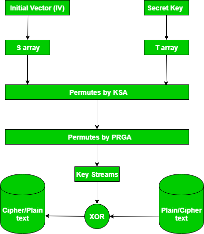

RC4 is a stream cipher and variable length key algorithm. This algorithm encrypt one byte at a time (or larger units on a time).
A key input is pseudorandom bit generator that produces a stream 8-bit number that is unpredictable without knowledge of input key, The output of generator is called key-stream, is combined one byte at a time with the plaintext stream cipher using X-OR operation.
Example:
RC4 Encryption 10011000 ⊕ 01010000 = 11001000 RC4 Decryption 11001000 ⊕ 01010000 = 10011000
Key-Generation Algorithm –
A variable-ength key of from 1 to 256 byte is used to initialize a 256-byte state vector S, with elements S[0] to S[255]. For encryption and decryption, a byte k is generated from S by selecting one of te 255 entries in systematic fashion, then the entries in S are permuted again.
- Key-Scheduling Algorithm:
Initialization: The entries of S are set equal to the values from 0 to 255 in ascending order, a temporary vector T, is created.
If length of the key k is 256 bytes, then k is assigned to T. Otherwise, for a key with length(k-len) bytes, the first k-len elements of T as copied from K and then K is repeated as many times as necessary to fill T. The idea is illustrated as follow:for i = 0 to 255 do S[i] = i; T[i] = K[i mod k - len];we use T to produce the initial permutation of S. Starting with S[0] to S[255], and for each S[i] algorithm swap it with another byte in S according to a scheme dictated by T[i], but S will still contain values from 0 to 255 :
j = 0; for i = 0 to 255 do { j = (j + S[i] + T[i])mod 256; Swap(S[i], S[j]); } - Pseudo random generation algorithm (Stream Generation):
Once the vector S is initialized, the input key will not be used. In this step, for each S[i] algorithm swap it with another byte in S according to a scheme dictated by current configuration of S. After reaching S[255] the process continues, starting from S[0] again
i, j = 0; while (true) i = (i + 1)mod 256; j = (j + S[i])mod 256; Swap(S[i], S[j]); t = (S[i] + S[j])mod 256; k = S[t]; - Encrypt using X-Or():

News:
In September 2015, Microsoft announced the end of using RC4 in Microsoft edge and internet explorer 11.
This video gives clear example of RC4 algorithm